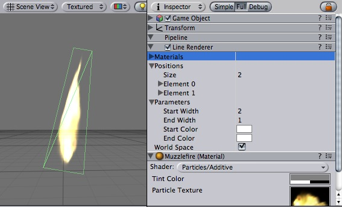

Previous
Previous
The line renderer will draw free-floating lines in 3D space. Each renderer can draw many lines.
The line renderer does not render one pixel thin lines; it renders 3D lines that have width and can be textured. It uses the same algorithm for line rendering as Trail Renderer.

The Line Renderer
Properties
| Property: | Function: |
|---|---|
| The first material from this list is used to render the lines. | |
| An array of line information. For each element in this array, Unity draws one line. Each element has a number of subsettings. | |
| Array of 3D points to connect. | |
| List of parameters for each line | |
| Width at the first line position. | |
| Width at the last line position. | |
| Color at the first line position. | |
| Color at the last line position. | |
| If enabled, the object's position is ignored, and the lines are rendered around world origin. |
Details
To create a line renderer:
- Choose GameObject -> Create Empty
- Choose Component -> Miscellaneous -> Line Renderer
- Drag a texture or material on the Line Renderer. It looks best if you use particle shader in the material.
The lines may seem to rotate as you move the camera. The line renderer completely ignores any other filters in the pipeline.
Hints
- Line Renderers are good to use for effects when you need to lay out all the vertices in one frame.